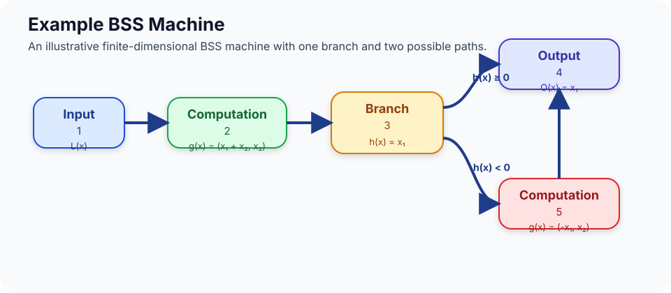

Blum-Shub-Smale Machines, and a model of computation over the real numbers
The primary model of computation we study is the Blum-Shub-Smale Machine.
To start, before defining a uniform model of computation over the real numbers, which can take inputs of any size, we first describe a model of computation which takes fixed input sizes in, which then will naturally give rise to the uniform model of computation.
Before beginning, we start by defining a rational function:
Definition 1. A rational function is a function of the form f(x)/g(x) where f and g are polynomials.
First, it makes sense to ask what we would like our model to be able to do. Certainly we must make restrictions on the basic operations that we have access to, as if we aren’t careful, choosing the wrong basic operations will create a model that is too powerful.
If we want to avoid getting bogged down in the details of real number arithmetic in the standard Turing Machine model, it makes sense to allow the addition, subtraction, multiplication, and division operations to have a single cost. Thus, it makes sense that in any step of computation, we can compute a fixed rational function on the number we store.
Finally, we want to be able to generate appropriate conditionals. If we are considering this for real numbers, it makes sense to allow for the comparison between some polynomial of a number and 0.
This gives the motivation for the four primary nodes/instructions that will make up the finite-dimensional Blum-Shub-Smale model.
Now, since we are only working over finite inputs, our input space should be Rn for some natural number n. Likewise, when we are doing our computations, we want to be able to store various real numbers, and thus our state space which we will perform our instructions on will be in Rm for some natural number m. Finally, the output space will also be Rp, for some natural p.
We finally present the model of computation we will be using for finite inputs.
Definition 2. The finite-dimensional Blum-Shub-Smale model of computation for a fixed input/output space, and state space S, is a finite directed graph with 4 types of nodes, where the nodes are labeled as distinct numbers in [N] = {1, . . . , N}: the first node is the input node, which has no edges going in, and only one outgoing edge, and has associated with it a linear function sending any value in the input space into a value in the state space. The next node is the computation node, which can have any number of incoming edges, and one outgoing edge, where the computation node is equipped with a rational function g : S → S, which is a rational function on each of the coordinates of S, and a next node given by β. Then, we have a branch node which has any number of incoming edges, and only two outgoing edges, where the branch node is represented by a polynomial h : S → R and two next nodes β+, β−, where β+ is the node that the branch node goes to if h is ≥ 0, and β− is the node that the branch node goes to if h is negative. Finally, we have an output node, which has any number of incoming edges and no outgoing edges, which is equipped with a linear map O : S → Rp which defines what the final output is given the current state of the machine.
An example of such a machine is given below:

Remark 1. One may be worried here of dividing by 0, when entering a computation node, since g is a rational function. Fortunately, this is not a problem, since before any computation node, we can add a branch node that checks if a 0 denominator will be computed, and if so, the branch node will send the machine into a permanently-looping state.
Remark 2. Without loss of generality, we can always assume our machines are in some standardized form. To do so, we can make sure that our input node is always labeled 1, and our output node is always labeled N, and that there is only one output node. Moreover, we can make sure that the polynomial function associated with our branching function is simply the projection onto the first coordinate of our state space value. To see why, given a machine M, we can create a machine M′ whose state space is one dimension greater. Then, for each computation node of M with computation function g, we define an analogous computation node in M′ which does nothing to the first coordinate in the state space, and computes g on the remaining coordinates in the state space. Then, for each branch node in M with associated function h, we make a branch node in M′ whose function is simply x → x1, and we add a computation node before such a branch node that computes h on all the coordinates but the first and stores it in the 1st coordinate, and does not change any of the other coordinates.
From now on, without loss of generality we will assume that all our BSS machines are in this standardized form.